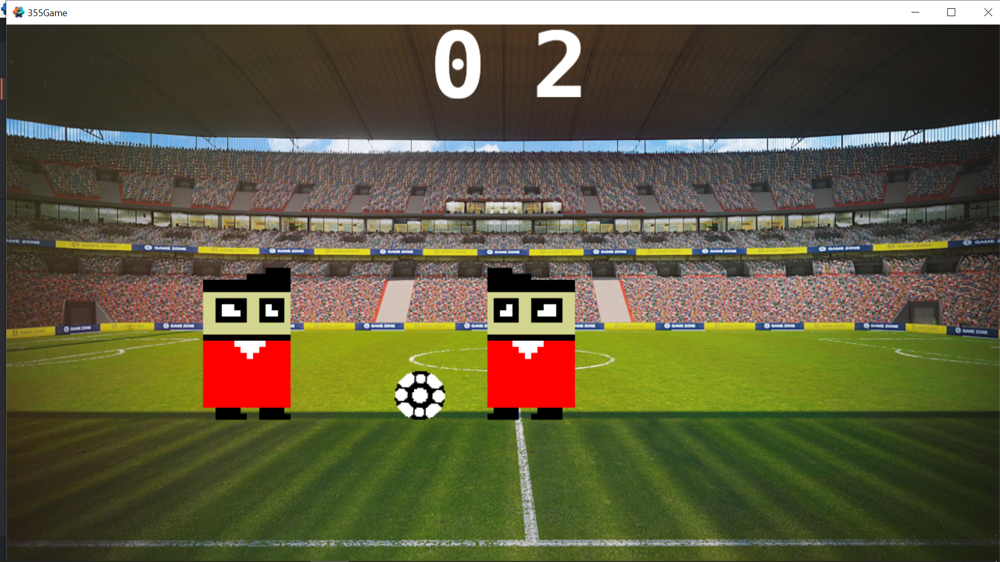

I started by wanting to make a game in Lua. I was not sure of any of the details, but a game sounded very interesting,
and in the queues assignment, I used Lua as one of the languages. This introduction to Lua changed my mind about the
"end" keyword. I thought that end would be far less clear than the more common '}' as the end to a loop or if statement.
I then decided that I liked Lua and wanted to use it more. After I had decided upon a Lua game, I did research into
game engines that would allow me to work in Lua. I looked at a few, and Defold seemed the least complicated of the
several options I had seen, while also seeming to have powerful tools. As I started work with Defold, I realized one
very important thing that I did not see right away. My biggest takeaway from this entire project can be summarized in
one sentence; an engine is something that augments and language, to remove weaknesses and add strengths.
Integration of Course Materials
I learned a lot about Lua in this project. Before this course, I don't think I had ever heard of the language Lua. Now,
though, I feel like I have a very solid grasp on the language. Additionally, going in depth on a new language taught me
that writability and readability can be different than at first seems, as I was pleasantly surprised by Lua.
Technical Complexity
If I had to say the one hard thing in this project, it would definitely be the collisions. Trying to create physics that
work well, even in edge cases was something I put a lot of time into, and at the end of this project, even the basic
bounces don't work very well. I thought that as soon as I got to the point where I was working out the collisions, it
would be very easy to figure out how to do it. As I started trying to make it work, it just didn't. I tried many things,
but none of them produced results that looked consistently good. Besides the mess that I call collisions, I am proud of
the project. The goals worked well, and message passing was very easy to learn and made sense. Message passing is where
one object sends a message to another object containing information, and so I just checked for a goal on the ball, then
it would pass a message to the players that they needed to reset their position and velocity. I don't think this project
would have been possible without the extremely useful messages.
Correctness
Zip File: ZIP
To access the scripts, go to: 355Game/objects/*.script
To access executable, go to: 355Game/x86_64-win32/355Game.exe
Screenshots:

.png)
.png)